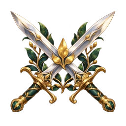
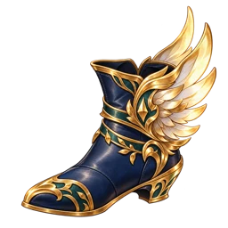

Approved A · equipment set strip assets
Production graphics. Dynamic labels, character data and counts belong to the game. Only equipped sets with at least one piece appear in the live strip. Incomplete sets remain visible; reference rules are in Set details.
Painted set crests
Vigor · alpha WebPBulwark · alpha WebP
Striker · alpha WebP
Swift · alpha WebPEditable UI surfaces
set-strip-panel.svgset-chip.svgactive-pill.svgrarity-pill.svgprogress-track.svgbotanical-divider.svgComplete existing UI kit
C2 cards, equipment, slots and controls · Apothecary base kit · Prompts and provenance
The downloadable kit preserves the public/images folder structure, so shared references remain resolvable. Existing equipment art is canonical; illustrative item names/stat values from the concept are not added as new game gear.